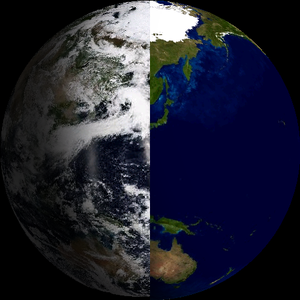

Device Output.

A standalone desk globe that shows Earth from space in real time—live day/night, NASA clouds, and city lights—on a 1.75" round AMOLED.

Most "Earth globe" gadgets use static textures spinning on a timer. This project calculates the true subsolar point (NOAA solar position) for the current UTC, downloads NASA VIIRS daily cloud mosaics, and additively blends NASA Black Marble city lights on the night side.
A precomputed lookup table maps every pixel on the round display to a geographic normal. The rendering thread shades day to night using a smootherstep terminator with 8×8 Bayer dithering to prevent RGB565 color banding.
A dedicated RTOS task fetches NASA VIIRS true-color snapshots, decodes the JPEGs in memory, feathers the dateline seam, and publishes the new texture atomically via pointer-swap.
Because AMOLED screens can't easily be screenshotted, the entire firmware rendering engine has a pixel-perfect Python replica on the desktop. Visual changes are proven on the replica before being flashed.
The real story of embedded systems lies in the hardware edge cases. Here are three critical bugs resolved during field-testing:
Text rendered perfectly on the host replica but garbled randomly on the physical panel. Root cause: the CO5300 display driver passes raw x/y/w/h coordinates without rounding. Any partial SPI write with an odd dimension shifts and corrupts the hardware buffer. The fix involved strict even-padding on every text blit.
During time-lapse animations, the globe would hold still for 30 frames then awkwardly lurch forward. The underlying NTP clock was bound to time(nullptr), which is whole-second granular. The fix derived a sub-second fractional offset using millis(), re-anchoring on every RTC tick to prevent wrapping, resulting in drift-free, 60fps smoothness.
When the globe was moved to a new house, the captive portal refused to load on 192.168.4.1. The ESP32's SoftAP channel strictly follows the Station radio. The radio kept hunting for the old home network saved deep in the driver, dragging the hotspot off-channel. The fix: explicitly wipe the persistent driver credentials and serve the portal in pure WIFI_AP mode.